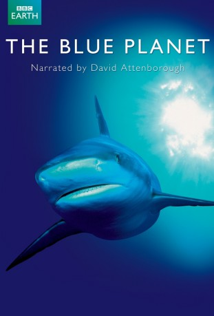

Alternativ: The Blue Planet
Auszeichnungen: 2 BAFTA-Awards gewonnen
 
 IMDB-Wertung: 8.9 / 10
IMDB-Wertung: 8.9 / 10  Metascore: 0
Metascore: 0 
Unser blauer Planet zeigt diese unbekannte Welt in einer nie zuvor gesehenen Weise. In acht Folgen erzählt die einzigartige Dokumentation vom Leben an Felsküsten und Korallenriffen, von Mangrovenwäldern und Polarmeeren, von der Tiefsee und vom offenen Meer. Die Kamera begleitet die größten Wale der Meere, zeigt Ballette riesiger Fischschwärme, beobachtet fliegende Pinguine und folgt Eisbären bei der verzweifelten Suche nach Nahrung. Und sie taucht in die ewige Nacht der Tiefsee, wo sich monsterartige Fische in ewiger Dunkelheit verbergen.
Jahr: 2001
Dauer: 43 Minuten
FSK:
Land: England Studio: BBCTonspuren:
Untertitel:
Auflösung: 720p (1250x714) Größe: 2273 MB
Genre: Dokumentation, TV-Serie
Regisseur: Alastair Fothergill
Drehbuch:
Soundtrack:
Darsteller:
 Pierce Brosnan als Himself - Narrator (US version), 9 episodes, 2001
Pierce Brosnan als Himself - Narrator (US version), 9 episodes, 2001- David Attenborough als Himself - Narrator, 8 episodes, 2001
- Jason Roberts als Himself, 1 episode, 2001
- Shailene Woodley » #96 on STARmeter CELEBS Born Today Celebrity News Most Popular Celebs PHOTOS Latest Stills Latest Posters Photos We Love EVENTS Awards Central Festival Central Oscars Golden Globes Sundance Cannes Comic-Con Emmy Awards Venice Film Festival Toronto Film Festival Tribeca SXSW All Events News & Community LATEST HEADLINES Henry Cavill Out as Superman Amid Warner Bros.' DC Universe Shake-Up (Exclusive) 5 hours ago | The Hollywood Reporter ‘The Tonight Show’ Cancels Norm MacDonald Appearance After Comedian’s #MeToo Comment 14 hours ago | Variety - TV News Summer 2018 Delivers $4.38 Billion in Domestic Grosses, Keeping Year on Record Pace 20 hours ago | Box Office Mojo NEWS Top News Movie News TV News Celebrity News Indie News COMMUNITY Contributor Zone Polls Watchlist YOUR WATCHLIST if (!('imdb' in window)) window.imdb = ; window.imdb.watchlistTeaserData = href : /list/watchlist, src : https://m.media-amazon.com/images/G/01/imdb/images/navbar/watchlist_slot1_logged_out-1670046337._CB470041656_.jpg , href : /search/title?count=100&title_type=feature,tv_series, src : https://m.media-amazon.com/images/G/01/imdb/images/navbar/watchlist_slot2_popular-4090757197._CB470041610_.jpg , href : /chart/top, src : https://m.media-amazon.com/images/G/01/imdb/images/navbar/watchlist_slot3_top250-575799966._CB470041651_.jpg ; The essential resource for entertainment professionalsFind industry contacts & talent representationAccess in-development titles not available on IMDbGet the latest news from leading industry tradesClaim your page and control your brand across IMDb & AmazonTryIMDbProFreeTry IMDbPro Free | Help Sign in with Facebook Other Sign in options doWithAds(function()if ('injected_slot' != 'injected_slot') ad_utils.register_ad('injected_navstrip');); doWithAds(function()if ('injected_slot' == 'cornerstone_slot') ad_utils.inject_serverside_ad('injected_navstrip', '');else if ('injected_slot' == 'injected_slot') ad_utils.inject_ad.register('injected_navstrip'); else ad_utils.gpt.render_ad('injected_navstrip');, ad_utils not defined, unable to render client-side GPT ad or injected ad.); if (typeof uet == 'function') uet(ne); doWithAds(function()if ('injected_slot' != 'injected_slot') ad_utils.register_ad('injected_billboard');); doWithAds(function()if ('injected_slot' == 'cornerstone_slot') ad_utils.inject_serverside_ad('injected_billboard', '');else if ('injected_slot' == 'injected_slot') ad_utils.inject_ad.register('injected_billboard'); else ad_utils.gpt.render_ad('injected_billboard');, ad_utils not defined, unable to render client-side GPT ad or injected ad.); Edit The Blue Planet (2001) if ('csm' in window) csm.measure('csm_body_delivery_started'); Full Cast & Crew Series Directed by Alastair Fothergill als
Datei: X:\Dokumentationen\Natur\Unser blauer Planet\1. Leben im Meer.mkv seit 12.09.2018
Festplatte: HD Serien(SU-Z)+Dokus+Musik
 Es gibt insgesamt 35 Filme in der Gruppe 'Dokumentationen\Natur'
Es gibt insgesamt 35 Filme in der Gruppe 'Dokumentationen\Natur'
")